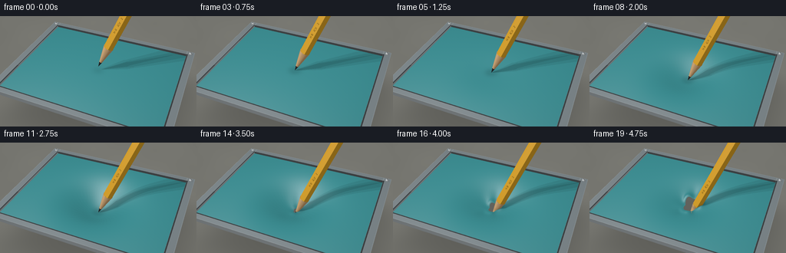
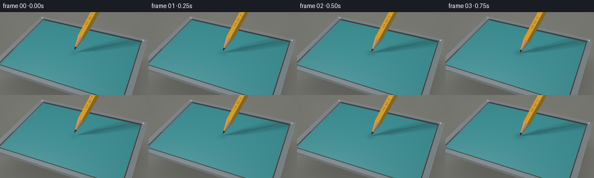

CODING AGENTS AS PIXEL WORLD MODELS
traex/GPT-6.1-Sol · mechanics_0031
点击播放 · 原生 RGB 像素
逐轮保存的候选
回放视频、检查图与代码变化。
每份候选均可单独播放。实际图片检查记录在下方工具轨迹中。
候选 01播放与检查图
点击播放 · 原生 RGB 像素


展开代码变化
--- 上一保存版本
+++ 本次保存版本
@@ -0,0 +1,343 @@
+"""Text-only, deterministic geometric rendering of a rubber puncture.
+
+The renderer here is just NumPy ray/primitive mathematics, not an external
+rendering or simulation package. Render large and area-filter to RGB frames.
+"""
+from pathlib import Path
+import json
+import numpy as np
+from PIL import Image, ImageDraw, ImageFont
+import artifact_io
+
+ROOT = Path(__file__).resolve().parent
+SPEC = json.loads((ROOT / 'task_spec.json').read_text())
+W, H = SPEC['width'], SPEC['height']
+SCALE = 3
+RW, RH = W * SCALE, H * SCALE
+
+def unit(v):
+ return v / np.maximum(np.linalg.norm(v, axis=-1, keepdims=True), 1e-12)
+
+CAM = np.array([3.25, -7.8, 7.0])
+TARGET = np.array([0., 0., -.04])
+FORWARD = unit(TARGET - CAM)
+RIGHT = unit(np.cross(FORWARD, [0., 0., 1.]))
+UP = np.cross(RIGHT, FORWARD)
+yy, xx = np.mgrid[:RH, :RW]
+sx = ((xx + .5) / RW - .5) * 7.18
+sy = (.5 - (yy + .5) / RH) * 7.18 * RH / RW
+# A long-lens macro shot: a little perspective without excessive foreshortening.
+DIR = unit(FORWARD + sx[..., None] * RIGHT / 10.9 + sy[..., None] * UP / 10.9).reshape(-1, 3)
+ORIGIN = np.broadcast_to(CAM, DIR.shape)
+NPIX = len(DIR)
+LIGHT = np.array([-3.8, -4.5, 8.5])
+AXIS = unit(.39 * RIGHT + np.array([0., 0., .921]))
+B1 = unit(np.cross(AXIS, [0., 1., 0.]))
+B2 = np.cross(AXIS, B1)
+PRADIUS = .182
+HEX_NORMALS = np.array([np.cos(k*np.pi/3 + .22)*B1 + np.sin(k*np.pi/3 + .22)*B2 for k in range(6)])
+INF = 1.e10
+
+def animation(i):
+ t = i / (SPEC['frames'] - 1)
+ # Slow loading, substantial stretching, then an opening that grows steadily.
+ if t <= .16:
+ q = t / .16
+ tip_z = .19 * (1-q)
+ depth = 0.
+ tear = 0.
+ elif t <= .61:
+ q = (t-.16)/.45
+ depth = .78 * (q*q*(3-2*q))
+ tip_z = -depth
+ tear = 0.
+ else:
+ q = (t-.61)/.39
+ tear = q*q*(3-2*q)
+ depth = .78 - .35*tear
+ tip_z = -.78 - .46*q
+ return depth, tear, np.array([0., 0., tip_z])
+
+def sheet_data(x, y, depth, tear):
+ # Near rupture the center of the opening follows the sloping pencil cone.
+ cx = .13 * tear
+ cy = .055 * tear
+ X, Y = x-cx, y-cy
+ r2 = X*X + Y*Y
+ sigma = .72 + .10 * depth
+ window = np.clip(1-(x/2.86)**12, 0, 1) * np.clip(1-(y/2.14)**12, 0, 1)
+ z = -depth * np.exp(-r2 / (2*sigma*sigma)) * window
+ ey = Y / 1.42
+ rho = np.sqrt(X*X + ey*ey + 1.e-12)
+ theta = np.arctan2(ey, X)
+ radius = (.013 + .265*tear) * (1 + .14*np.sin(3*theta+.5) + .07*np.cos(5*theta-.6))
+ delta = rho-radius
+ # Gently curling, uneven lips and tensile creases at the torn opening.
+ curl = tear*.066*np.exp(-((delta-.055)/.09)**2) * (.5+.5*np.sin(3*theta+.5))
+ folds = tear*.026*np.cos(5*theta+.5)*np.exp(-((rho-.40)/.25)**2)
+ z += curl + folds
+ hole = (rho < radius) & (tear > .005)
+ crack = np.zeros(x.shape, bool)
+ crack_distance = np.ones(x.shape)*10
+ if tear > 0:
+ for angle, length in [(-1.05,.21), (1.77,.16), (3.1,.12)]:
+ along = X*np.cos(angle)+ey*np.sin(angle)
+ across = np.abs(-X*np.sin(angle)+ey*np.cos(angle))
+ end = (.21 + length)*tear
+ width = .017*tear*np.clip((end-along)/max(end, .001), 0, 1)
+ active = (along > .12*tear) & (along < end)
+ crack |= active & (across < width)
+ crack_distance = np.minimum(crack_distance, np.where(active, across-width, 10))
+ return z, hole | crack, delta, rho, theta, crack_distance
+
+def intersect_sheet(o, d, depth, tear):
+ t = -o[:,2]/d[:,2]
+ for _ in range(30):
+ p = o+t[:,None]*d
+ z = sheet_data(p[:,0],p[:,1],depth,tear)[0]
+ tn = (z-o[:,2])/d[:,2]
+ t = t*.20 + tn*.80
+ p = o+t[:,None]*d
+ z, hole, edge, rho, theta, cd = sheet_data(p[:,0],p[:,1],depth,tear)
+ valid = (np.abs(p[:,0]) < 2.86) & (np.abs(p[:,1]) < 2.14) & ~hole & (t>0)
+ eps = .003
+ zx = (sheet_data(p[:,0]+eps,p[:,1],depth,tear)[0]-sheet_data(p[:,0]-eps,p[:,1],depth,tear)[0])/(2*eps)
+ zy = (sheet_data(p[:,0],p[:,1]+eps,depth,tear)[0]-sheet_data(p[:,0],p[:,1]-eps,depth,tear)[0])/(2*eps)
+ normal = unit(np.stack([-zx,-zy,np.ones_like(zx)],axis=-1))
+ return np.where(valid,t,INF), normal, (edge,rho,theta,cd)
+
+def intersect_box(o,d,lo,hi):
+ lo,hi = np.array(lo),np.array(hi)
+ inv = 1/np.where(np.abs(d)>1.e-10,d,1.e-10)
+ aa=(lo-o)*inv; bb=(hi-o)*inv
+ near=np.minimum(aa,bb); far=np.maximum(aa,bb)
+ t0=np.max(near,axis=1); t1=np.min(far,axis=1)
+ good=(t1>=np.maximum(t0,0))
+ t=np.where(good,t0,INF)
+ face=np.argmax(near,axis=1)
+ normal=np.zeros_like(d)
+ normal[np.arange(len(d)),face]=-np.sign(d[np.arange(len(d)),face])
+ return t,normal
+
+def intersect_sphere(o,d,c,r):
+ p=o-np.array(c)
+ b=np.sum(p*d,axis=1)
+ cc=np.sum(p*p,axis=1)-r*r
+ disc=b*b-cc
+ t=-b-np.sqrt(np.maximum(disc,0))
+ normal=unit(p+t[:,None]*d)
+ return np.where((disc>=0)&(t>0),t,INF),normal
+
+def intersect_cone(o,d,tip,s0,s1,r0,r1):
+ p=o-tip
+ ps=p@AXIS; ds=d@AXIS
+ pr=p-ps[:,None]*AXIS; dr=d-ds[:,None]*AXIS
+ k=(r1-r0)/(s1-s0)
+ offset=r0-k*s0
+ rr=k*ps+offset
+ A=np.sum(dr*dr,axis=1)-(k*ds)**2
+ B=2*(np.sum(pr*dr,axis=1)-rr*k*ds)
+ C=np.sum(pr*pr,axis=1)-rr*rr
+ disc=B*B-4*A*C
+ sq=np.sqrt(np.maximum(disc,0))
+ den=2*np.where(np.abs(A)>1e-9,A,1e-9)
+ t0=(-B-sq)/den; t1=(-B+sq)/den
+ lower=np.minimum(t0,t1); upper=np.maximum(t0,t1)
+ s=ps+lower*ds
+ good=(disc>=0)&(lower>0)&(s>=s0)&(s<=s1)
+ su=ps+upper*ds
+ good2=(disc>=0)&(upper>0)&(su>=s0)&(su<=s1)
+ t=np.where(good,lower,np.where(good2,upper,INF))
+ v=pr+np.minimum(t,100)[:,None]*dr
+ normal=unit(unit(v)-k*AXIS)
+ return t,normal
+
+def intersect_pencil(o,d,tip):
+ # Intersection of six planes makes actual lacquered hexagonal faces.
+ p=o-tip
+ s=p@AXIS; ds=d@AXIS
+ tnear=np.full(len(d),-INF); tfar=np.full(len(d),INF)
+ face=np.zeros(len(d),np.int16)
+ impossible=np.zeros(len(d),bool)
+ normals=list(HEX_NORMALS)+[-AXIS,AXIS]
+ offsets=[PRADIUS*np.cos(np.pi/6)]*6+[-.91,5.8]
+ for j,(n,bound) in enumerate(zip(normals,offsets)):
+ val=p@n; v=d@n
+ tv=(bound-val)/np.where(np.abs(v)>1.e-10,v,1.e-10)
+ entering=v<0
+ update=entering&(tv>tnear)
+ tnear=np.where(update,tv,tnear)
+ face=np.where(update,j,face)
+ tfar=np.where(~entering,np.minimum(tfar,tv),tfar)
+ impossible|=(np.abs(v)<1.e-10)&(val>bound)
+ t=np.where((tnear<=tfar)&(tnear>0)&~impossible,tnear,INF)
+ n=np.array(normals)[face]
+ mat=np.ones(len(d),np.int16)*3
+ for s0,s1,r0,r1,m in [(0,.235,0,.056,5),(.225,.924,.054,PRADIUS,4)]:
+ tt,nn=intersect_cone(o,d,tip,s0,s1,r0,r1)
+ hit=tt<t
+ t=np.where(hit,tt,t)
+ n=np.where(hit[:,None],nn,n)
+ mat=np.where(hit,m,mat)
+ return t,n,mat,face
+
+def illuminate(p,n,view,base,rough=.3,metal=False):
+ l=unit(LIGHT-p)
+ diffuse=np.maximum(np.sum(n*l,axis=1),0)
+ halfv=unit(l+view)
+ nh=np.maximum(np.sum(n*halfv,axis=1),0)
+ broad=np.power(nh,12)*.055
+ shine=np.power(nh,1/rough**2)*(.23 if not metal else .37)
+ # Large cool studio fill on the right; subdued warm key on the left.
+ filldir=unit(np.array([4.,2.,5.])-p)
+ fill=np.maximum(np.sum(n*filldir,axis=1),0)*.16
+ intensity=.32+.69*diffuse+fill
+ out=base*intensity[:,None]
+ out+=(broad+shine)[:,None]*np.array([.96,.98,1.])
+ return out
+
+# Very restrained black pencil stamping, mapped onto one real hexagonal face.
+label=Image.new('L',(480,90),0)
+ld=ImageDraw.Draw(label)
+try:
+ font=ImageFont.truetype('/usr/share/fonts/truetype/dejavu/DejaVuSans.ttf',42)
+except OSError:
+ font=ImageFont.load_default()
+ld.text((5,16),'H B ⢠2',font=font,fill=225,stroke_width=0)
+LABEL=np.asarray(label)/255.
+
+def render(i):
+ depth,tear,tip=animation(i)
+ o,d=ORIGIN,DIR
+ # Warm out-of-focus bench, visible around the jig and through the tear.
+ t=(-1.55-o[:,2])/d[:,2]
+ p=o+t[:,None]*d
+ benchgrain=.012*np.sin(p[:,0]*.75+p[:,1]*1.7)+.007*np.sin(p[:,0]*3-p[:,1]*.5)
+ color=np.array([.205,.205,.183])[None,:]*(.94+benchgrain[:,None])
+ shadow=np.exp(-((p[:,0]-.28)**6/3.3**6+(p[:,1]-.1)**6/2.7**6))
+ color*= (1-.37*shadow)[:,None]
+ best=t.copy()
+
+ ts,ns,info=intersect_sheet(o,d,depth,tear)
+ hit=ts<best
+ ps=o+np.minimum(ts,40)[:,None]*d
+ edge,rho,theta,cd=info
+ fine=.006*(np.sin(ps[:,0]*241+ps[:,1]*133)*np.sin(ps[:,1]*213-ps[:,0]*167))
+ fine+=.003*np.sin(ps[:,0]*37+ps[:,1]*52)
+ base=np.broadcast_to(np.array([.045,.265,.284]),(NPIX,3)).copy()
+ base*= (1+fine)[:,None]
+ # The uniform matte membrane acquires radial tension, not a cloth weave.
+ tension=depth*.015*np.sin(theta*45+rho*20)*np.exp(-((rho-.43)/.58)**2)
+ base*=(1+tension)[:,None]
+ col=illuminate(ps,ns,-d,base,rough=.24)
+ col*= (1-.12*depth*np.exp(-rho*rho/.45))[:,None]
+ # Analytic area-light pencil shadows (three samples).
+ shadowcount=np.zeros(NPIX)
+ for offset in [(-.8,-.55,0),(.7,-.3,.2),(0,.7,-.1)]:
+ lpos=LIGHT+offset
+ ld=unit(lpos-ps)
+ raystart=ps+ns*.006
+ st,_,_,_=intersect_pencil(raystart,ld,tip)
+ shadowcount += st<np.linalg.norm(lpos-ps,axis=1)
+ col*= (1-.40*shadowcount/3)[:,None]
+ # Local occlusion is strongest only immediately around physical contact.
+ sproj=np.clip((ps-tip)@AXIS,0,1.2)
+ distance=np.linalg.norm(ps-(tip+sproj[:,None]*AXIS),axis=1)
+ contact=.20*np.exp(-(np.maximum(distance-.075,0)/.17)**2)
+ col*= (1-contact)[:,None]
+ if tear>0:
+ rim=np.exp(-(np.maximum(edge,0)/.016)**2)*tear
+ rim=np.maximum(rim,np.exp(-(np.maximum(cd,0)/.010)**2)*tear*.8)
+ col=col*(1-rim[:,None]*.27)+rim[:,None]*np.array([.018,.055,.052])
+ smallbright=np.exp(-((edge-.022)/.010)**2)*tear
+ col+=smallbright[:,None]*np.array([.010,.024,.020])
+ color=np.where(hit[:,None],col,color)
+ best=np.where(hit,ts,best)
+
+ # Brushed aluminium tension frame and the dark retaining gasket.
+ bars=[([-3.12,-2.38,-.09],[-2.83,2.38,.065]),
+ ([2.83,-2.38,-.09],[3.12,2.38,.065]),
+ ([-2.83,-2.38,-.09],[2.83,-2.13,.065]),
+ ([-2.83,2.13,-.09],[2.83,2.38,.065])]
+ for lo,hi in bars:
+ tt,nn=intersect_box(o,d,lo,hi)
+ hh=tt<best
+ pp=o+np.minimum(tt,40)[:,None]*d
+ metalbase=np.broadcast_to(np.array([.20,.235,.25]),(NPIX,3)).copy()
+ brush=.016*np.sin(pp[:,0]*340+pp[:,1]*3)+.005*np.sin(pp[:,0]*790)
+ metalbase*= (1+brush)[:,None]
+ mc=illuminate(pp,nn,-d,metalbase,.19,True)
+ # A softly highlighted machined bevel, plus the inside rubber gasket.
+ edgedist=np.minimum.reduce([np.abs(pp[:,0]-lo[0]),np.abs(pp[:,0]-hi[0]),np.abs(pp[:,1]-lo[1]),np.abs(pp[:,1]-hi[1])])
+ mc+=np.exp(-(edgedist/.017)**2)[:,None]*.065
+ gasket=((np.abs(np.abs(pp[:,0])-2.855)<.022)&(np.abs(pp[:,1])<2.18))|((np.abs(np.abs(pp[:,1])-2.15)<.021)&(np.abs(pp[:,0])<2.87))
+ mc=np.where(gasket[:,None],mc*.22,mc)
+ color=np.where(hh[:,None],mc,color)
+ best=np.where(hh,tt,best)
+ for x in [-2.97,2.97]:
+ for y in [-2.245,2.245]:
+ tt,nn=intersect_sphere(o,d,[x,y,.066],.070)
+ hh=tt<best
+ pp=o+np.minimum(tt,40)[:,None]*d
+ mc=illuminate(pp,nn,-d,np.broadcast_to([.37,.40,.41],(NPIX,3)),.17,True)
+ slot=(np.abs((pp[:,0]-x)*.85+(pp[:,1]-y)*.52)<.009)&(np.abs((pp[:,0]-x)*-.52+(pp[:,1]-y)*.85)<.048)
+ mc=np.where(slot[:,None],mc*.16,mc)
+ color=np.where(hh[:,None],mc,color)
+ best=np.where(hh,tt,best)
+
+ tp,npencil,material,face=intersect_pencil(o,d,tip)
+ hit=tp<best
+ pp=o+np.minimum(tp,40)[:,None]*d
+ local=pp-tip
+ axial=local@AXIS
+ u=local@B1; v=local@B2
+ angle=np.arctan2(v,u)
+ base=np.broadcast_to([.78,.41,.028],(NPIX,3)).copy()
+ # A thin, darker edge along the hexagonal lacquered facets.
+ angleface=np.remainder(angle-.22+np.pi/6,np.pi/3)-np.pi/6
+ seam=np.exp(-((np.abs(angleface)-np.pi/6)/.023)**2)
+ base*= (1-.15*seam)[:,None]
+ lacquer=illuminate(pp,npencil,-d,base,.145)
+ # Stamp lives on the left-front face, and moves with the pencil.
+ visibleface=int(np.argmax(HEX_NORMALS@unit(CAM-tip)))
+ sidevec=np.cross(AXIS,HEX_NORMALS[visibleface])
+ transverse=local@sidevec
+ lx=np.clip(((axial-1.57)/1.15*480).astype(int),0,479)
+ ly=np.clip(((transverse+.10)/.20*90).astype(int),0,89)
+ stamp=(face==visibleface)&(axial>1.57)&(axial<2.72)&(np.abs(transverse)<.10)
+ ink=LABEL[ly,lx]*stamp
+ lacquer*= (1-.88*ink)[:,None]
+ grain=.035*np.sin(angle*47+axial*5)+.024*np.sin(angle*111-axial*14)+.01*np.sin(angle*227+axial*22)
+ woodbase=np.broadcast_to([.65,.40,.19],(NPIX,3)).copy()
+ woodbase*= (1+grain)[:,None]
+ # Six sharpening cuts, subtly alternating light/dark wood grain.
+ woodbase*= (1+.05*np.cos(angle*6+.7))[:,None]
+ wood=illuminate(pp,npencil,-d,woodbase,.35)
+ graphitebase=np.broadcast_to([.025,.030,.034],(NPIX,3)).copy()
+ graphite=illuminate(pp,npencil,-d,graphitebase,.24)
+ pencilcol=np.where((material==4)[:,None],wood,lacquer)
+ pencilcol=np.where((material==5)[:,None],graphite,pencilcol)
+ # Dark occlusion where the pencil enters the rubber, but keep the point legible.
+ ph=sheet_data(pp[:,0],pp[:,1],depth,tear)[0]
+ collar=np.exp(-((pp[:,2]-ph)/.065)**2)*tear*.20
+ pencilcol*= (1-collar)[:,None]
+ color=np.where(hit[:,None],pencilcol,color)
+
+ # Gentle lens vignette and filmic output, with no decorative overlays.
+ vignette=1-.10*((sx.ravel()/4.4)**2+(sy.ravel()/3.1)**2)
+ color*=vignette[:,None]
+ color=np.clip(color,0,1)
+ srgb=np.where(color<=.0031308,color*12.92,1.055*color**(1/2.4)-.055)
+ im=Image.fromarray(np.uint8(np.clip(srgb.reshape(RH,RW,3)*255+.5,0,255)))
+ return np.asarray(im.resize((W,H),Image.Resampling.LANCZOS)).copy()
+
+def main():
+ frames=[]
+ for i in range(SPEC['frames']):
+ frames.append(render(i))
+ print(f'Rendered {i+1}/{SPEC["frames"]}',flush=True)
+ artifact_io.save(np.stack(frames).astype(np.uint8),ROOT)
+ print('Saved RGB video artifacts.',flush=True)
+
+if __name__=='__main__':
+ main()
可观测工具轨迹
实际执行的命令与返回图片。
命令 1exit 0
/bin/bash -lc "ls -la && cat prompt.txt && printf '\\n--- RULES ---\\n' && cat GENERATION_RULES.md && printf '\\n--- SPEC ---\\n' && cat task_spec.json"
命令 2exit 0
/bin/bash -lc "cat artifact_io.py && python - <<'PY'
import numpy, PIL
print('numpy',numpy.__version__)
PY"命令 3exit 0
/bin/bash -lc 'command -v ffmpeg || true'
命令 4exit 0
/bin/bash -lc 'OPENBLAS_NUM_THREADS=1 OMP_NUM_THREADS=1 python generate.py'
命令 5exit 0
/bin/bash -lc "python - <<'PY'
from pathlib import Path
import numpy as np
from PIL import Image
p=Path('.')
z=np.load('pixels.npz')['pixels']
files=sorted((p/'frames').glob('*.png'))
assert z.shape==(144,256,20)
assert len(files)==20
assert all(Image.open(f).size==(256,144) and Image.open(f).mode=='RGB' for f in files)
assert all(f.is_file() and f.stat().st_size>0 for f in [p/'generate.py',p/'index.html',p/'pixels.npz',p/'inspection.png'])
print('Verified: 20 RGB frames, 256Ã144, 4 fps, 5 seconds.')
print('Artifacts: index.html, pixels.npz, frames/, inspection.png, generate.py')
PY"保存候选 1 份；完成命令 5 次；可验证图片返回 0 张。原始 API 响应与完整日志保留在本地。